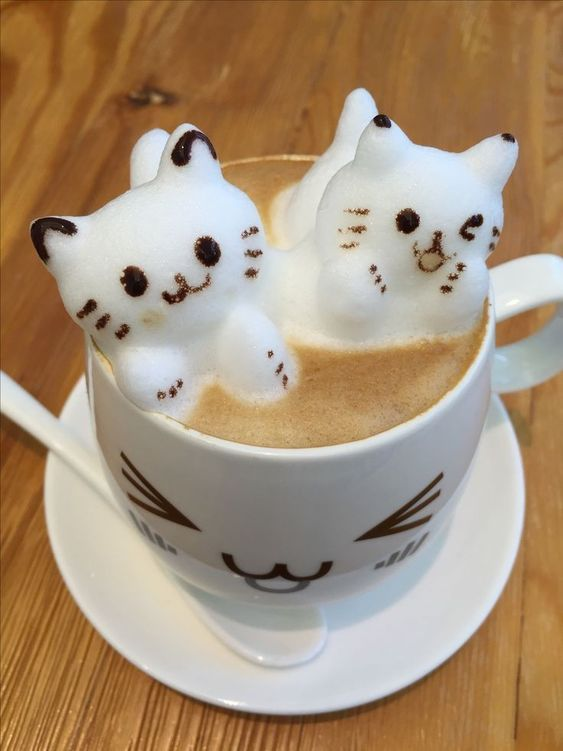
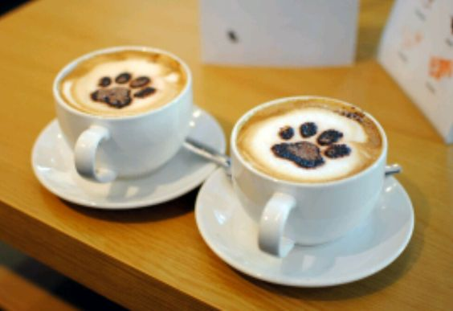

En esta aventura visitaron primero una cafeteria. Aqui los michis se fueron a tomar unos costosos cafes por que aun no habian desayunado nada y realmente disfrutaron mucho del cafe por que realmente estaba muy rico lo que pidieron para tomar y aparte la atencion que recibieron por parte de la cafeteria estuvo muy buena asi que el lugar y la atencion 10/10. Dentro de la cafeteria estuvieron muy felices todo el timepo porque ambos disfrutaban de la compañia del otro y por la conversacion que estaban teniendo ahi dentro:3.